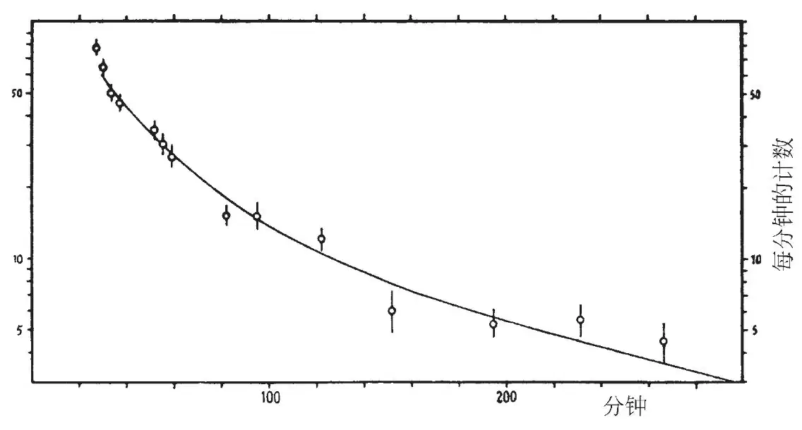

英文
英文迈特纳，弗里施
编者按
莉泽·迈特纳和奥托·弗里施在这篇文章中报道了关于探测铀核裂变产物的新实验。早期的研究认为裂变碎片的产生会伴随有几百兆电子伏的能量出现。本文作者用中子轰击氢氧化铀样品，尝试在1毫米远的纸张表面或者水中收集裂变碎片。他们发现了一系列不同的裂变碎片存在的证据。可以看出，仅靠吸收一个中子似乎不能提供铀原子核足够的动能使其到达他们的收集表面。这项新技术提供了一个途径去更仔细地检测裂变过程中产生的原子核碎片。 英文
哈恩和施特拉斯曼[1]发现了一种新型核反应，即在中子轰击下，铀核和钍核分裂为两个更小的核。以此他们证明了钡核、镧核、锶核、钇核以及最近又发现的氙核和铯核等裂变产物。 英文
可以简单地以一种本质上经典的方式，比如类似于液滴分裂的形式，来描述这类核反应，并且分裂的产物必定以上百兆电子伏的动能飞离[2]。弗里施[3]首先给出这些高能反应的证明，几乎是在同一时间其他多位研究者也给出了证明[4]。 英文
迈特纳已经指出（见参考文献3），像人们从α反冲中收集放射性沉积物那样，利用这些高能量来收集裂变产物是可能的。在此期间，约里奥已独立地进行了这类实验[5]。我们利用哥本哈根理论物理研究所最近制成的高压装置，现在已经开展了一些实验。 英文
将一薄层氢氧化铀放在距收集表面1毫米的位置，并用中子对其进行轰击。中子是用能量高达800千电子伏的氘核轰击锂靶或铍靶而产生的。在第一个实验中，使用一张纸作为收集表面（已经确定纸在经过中子轰击后纸本身不具有放射性）。在辐照中断大约两分钟后，将纸放在具有0.1毫米厚铝壁的盖革–米勒计数器的附近。我们发现放射性可以很好地被测量到，并且开始时放射性衰变得很快（约两分钟的半衰期），然后会较为缓慢。鉴于估计其中存在数目繁多的周期，我们并不打算对缓慢的衰变进行分析。 英文
然而，收集到的放射性有相当大的强度，这促使我们试图通过化学分离的方法得到更进一步的信息。最简单的实验是采用一种化学方法，最初发展这种方法是为了把所谓的“超铀”元素从铀及紧邻它的较低的元素中分离出来[6]。考虑到在我们的样品中不存在铀，并鉴于哈恩和施特拉斯曼[1]发现的轻元素的放射性，这种实验方法必须稍做改进。 英文
这些实验均以石蜡浅槽中的水作收集表面。在（大约一小时的）辐照后，少量样品水被蒸发到一片铝箔上；并且其放射性衰变为零。用其他方法也可证明这些水中并不含铀。在剩余的水中，我们加入150毫克氯化钡、15毫克硝酸镧、15毫克氯化铂和足够的盐酸，以便得到7%的酸浓度。采用通常的方法，用硫化氢将铂析出；析出的沉淀物经过精心漂洗和烘干，然后放在我们的计数器附近。 英文
我们发现三个这样的实验得到的结果是相互一致的。在其中一种情况下，对放射性物质的衰变跟踪了28小时。作为对照，对经过一个小时辐照的铀样品，按同样方式进行化学处理。结果显示，这两条衰变曲线完全一致，并且它们与之前由哈恩、迈特纳和施特拉斯曼在相同条件下得到的曲线也完全符合。在附图中，圆圈表示我们的反冲实验，而实线表示铀的沉淀物。沉淀物与经过蒸发样品的放射性（辐照后的第一小时内）的对比表明，沉淀物大约含有水中收集到的总放射性的2/3。然而，在大约两小时后，我们发现经过蒸发的样品比沉淀样品的衰变要更加缓慢，这大概是由哈恩和施特拉斯曼[1]所发现的更长寿命的裂变产物所致。 英文

根据这些结果我们可以断定，所谓“超铀”核是由铀核裂变产生的。仅仅俘获一个中子只能为核提供极少的动能，因此这些核中没有一个能够达到水的表面。因而所谓“超铀”周期似乎也必然是由比铀轻得多的元素所致。 英文
最后，我们要感谢伯格博士、科赫博士和布罗斯特伦，他们将高压设备交给我们自由使用并好心地对实验中的辐照提供了帮助。我们同样对玻尔教授在哥本哈根理论物理研究所对我们的热情款待表示感激。 英文
（沈乃澂 翻译；张焕乔 审稿）